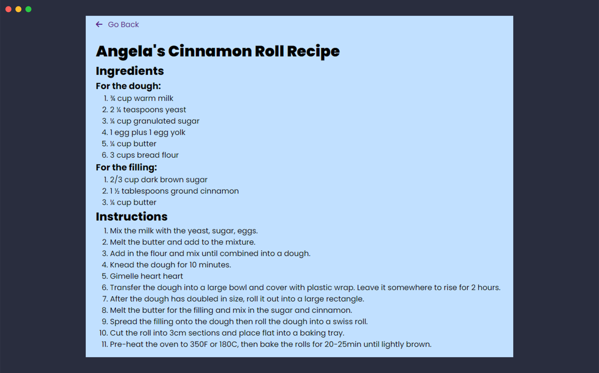
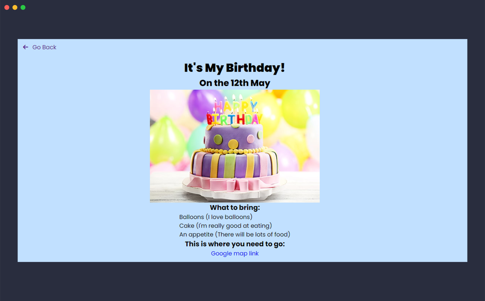
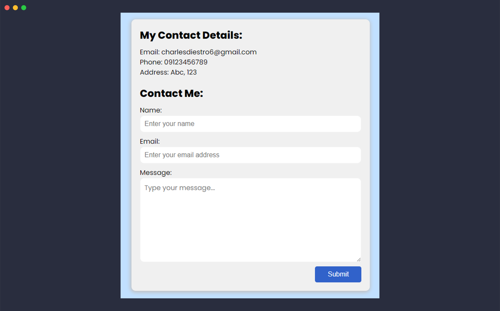
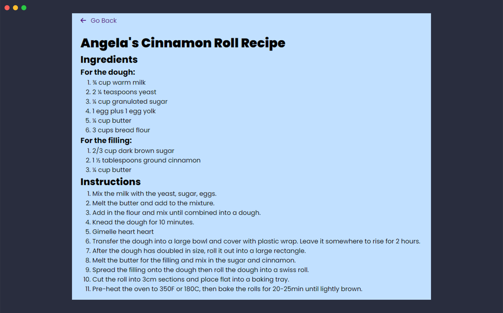
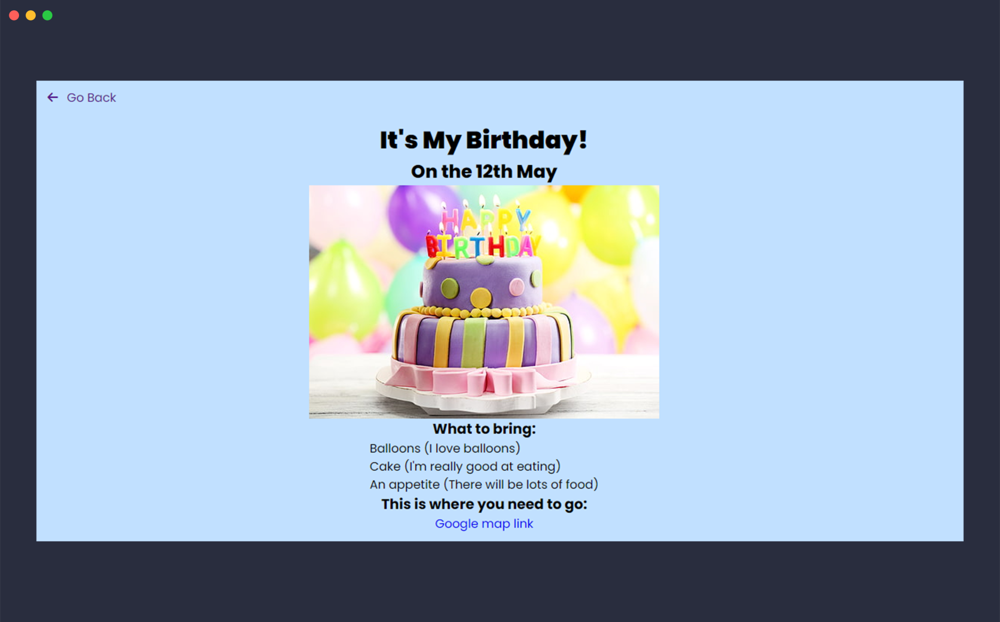
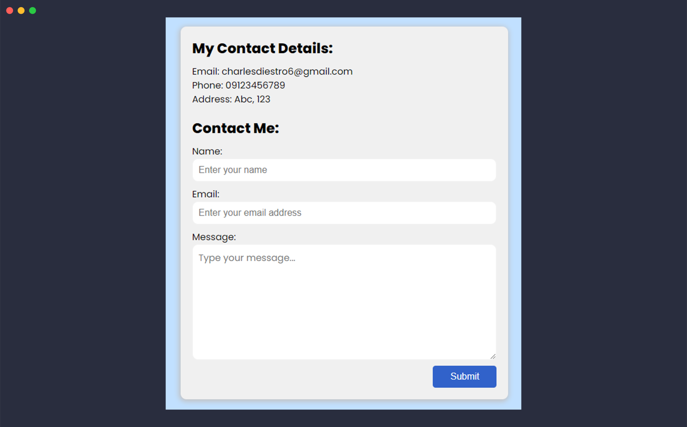
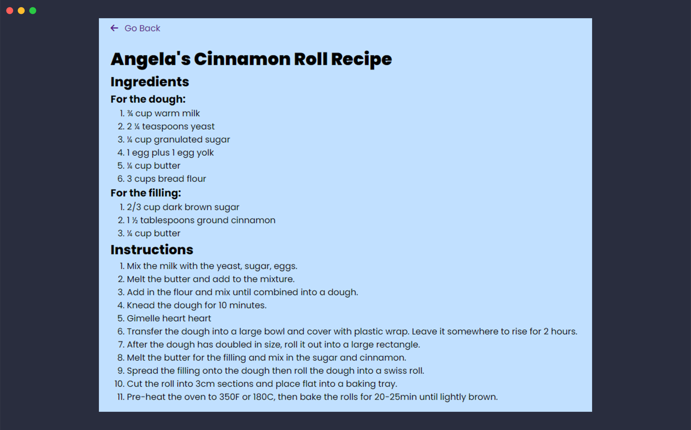
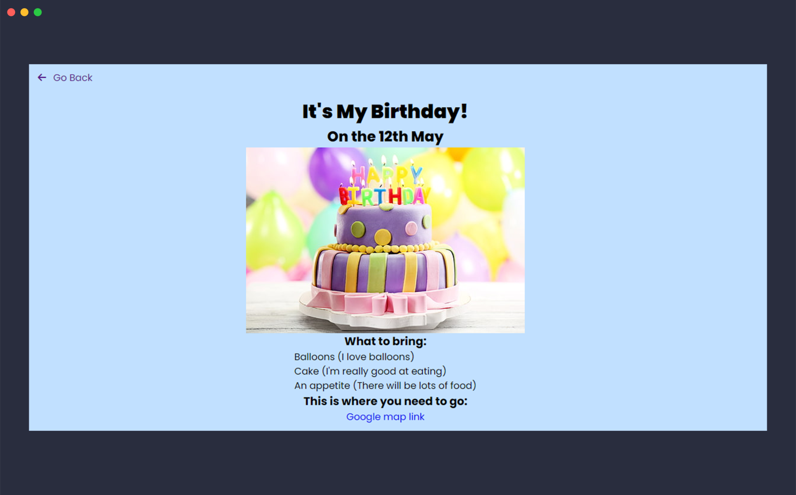
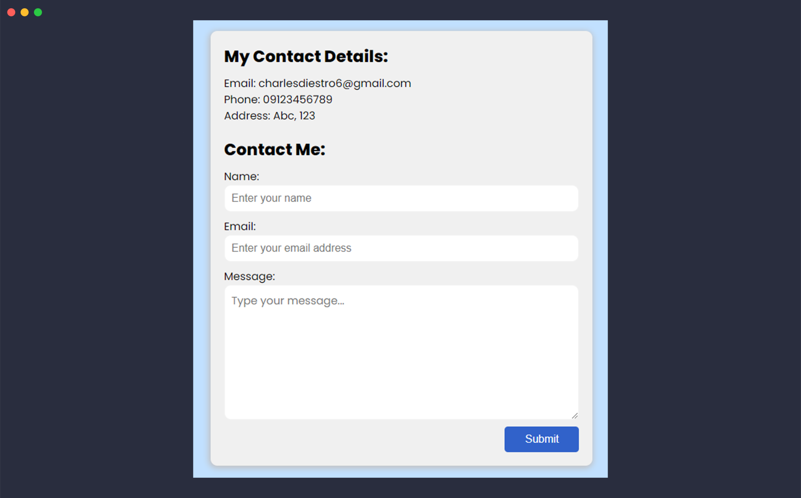

Charles Manuel Diestro
Rising third year student at Filamer Christian University taking up Bachelor of Science in Information Technology, with career interests in website development.
Throughout this portfolio, you'll find various
projects demonstrating my passion for technology and growth during the ITE 4 course. Each
project is
a testament to the milestones in my learning journey, showcasing my dedication and commitment to
excellence. From coding
challenges to multimedia presentations, I've invested my best efforts into every endeavor.
So sit back, relax, and dive into the fruits of my hard work and dedication. I can't wait to
share this journey with you
and show you what I've accomplished. Let's embark on this adventure together!
Below are some of my projects!
 







